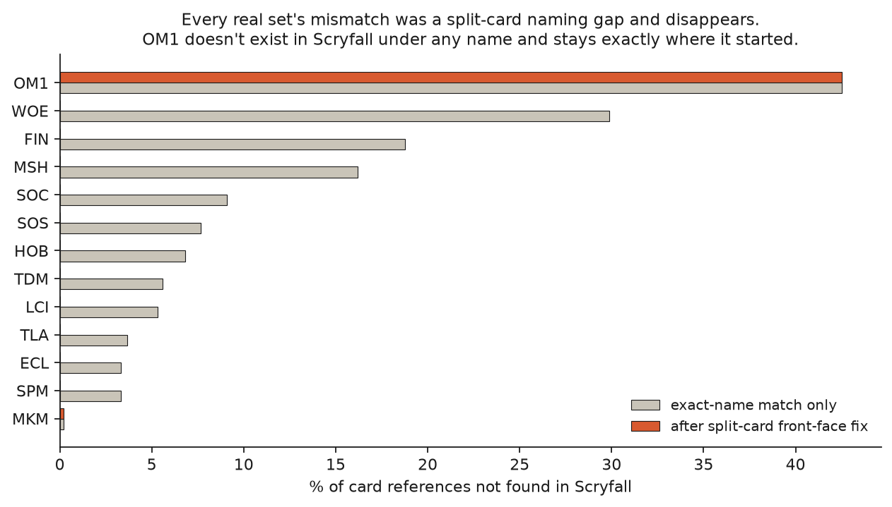
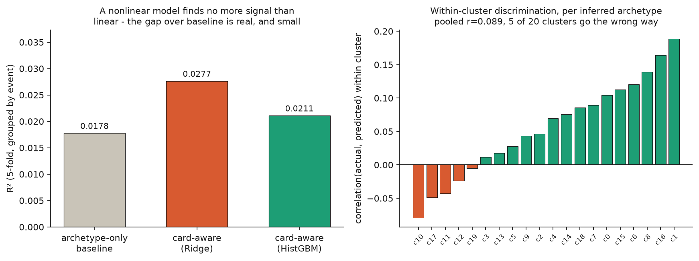

Machine learning applied to quantum computing.
Predicting a real MTGO Standard decklist's tournament performance from its actual card list beats predicting from its archetype label alone. Archetype-only gets R²=0.018. Reading the real card list gets R²=0.028. The gap held up under two separate checks, and it's still small. This isn't a working win-rate predictor. It's a card list carrying signal an archetype tag can't.
The obvious source for "deck vs. deck matchup performance" is a site like
magicmeta.net's Standard Matchup Matrix: real, structured, archetype-vs-archetype win
rates. Training on it would have made the whole project circular. If every deck tagged
"Red Aggro" gets Red Aggro's archetype-level win rate as its label, a model wins by
reconstructing the archetype and looking up its rate, and that proves nothing about
reading the actual 60 cards. Two other candidates, aetherhub.com and mtgdecks.net, both
declare Content-Signal: ai-train=no in their robots.txt, checked before
writing a scraper. Ruled out on that basis alone.
What's used instead: mtgo.com's own official event pages, which embed
individual decklists joined to per-player standings (rank, game win %) by login ID. A
specific list, tied to its specific real result. 417 real Standard Challenge events,
September 2025 through August 2026, self-rate-limited well past what its robots.txt
would require if it had one. 13,036 decklists, every one joined to a real outcome.
Resolving MTGO's card names against Scryfall left 4.13% of all card references
unmatched. Most of that (98 of 156 distinct missing names) came from a naming-convention
gap: MTGO reports only a split, adventure, or double-faced card's front face
(Cheeky House-Mouse), where Scryfall keys the full card
(Cheeky House-Mouse // Squeak By). A front-face index fixed it.
What was left, 57 distinct card names tagged with MTGO's internal OM1
cardset code, didn't respond to that fix. A live Scryfall search for any of these names,
Kavaero, Mind-Bitten, Bayo, Irritable Instructor,
Rizna, the Spider-Crowned, returns zero results. Not just missing from a
local snapshot. Missing from Scryfall's live database and its autocomplete, confirmed
against a same-day re-download. Scryfall does have a real set coded om1
("Through the Omenpaths," a digital Spider-Man exclusive with genuine Marvel names like
Agent Venom), but MTGO's OM1-tagged cards are a thematically
coherent, unrelated spider and web-themed set (Leyline Weaver,
Withar, Cocoon Keeper) with a sane five-color, full-rarity, 0-5 mana curve
spread across 92% of events and 61% of decks, a few cards per deck at a time. That's the
structural signature of a real, complete set. Most likely an MTGO-internal set-code
collision with Scryfall's own om1. For the roughly 3% of card slots this
touches, mana cost, color, and card type come directly from MTGO's own card attributes
instead of Scryfall, so the deck features stay correct either way.

Every real set's mismatch was a naming-convention gap, and it disappears once fixed. OM1 doesn't move. It isn't a formatting problem; the cards aren't in Scryfall under any name.
MTGO's raw data has no archetype or deck-type field at all, checked directly against
the JSON keys. Labels here are inferred by TF-IDF-weighted K-means clustering over each
deck's nonland card-inclusion vector (k=20, chosen by silhouette score), the same general
technique real metagame-analysis tools use. These are cluster IDs, called
inferred clusters everywhere in this project rather than official archetype
names: a burn shell full of Nova Hellkite and Lightning Strike,
a tempo shell full of Sleight of Hand and Slickshot Show-Off,
and eighteen more, none of them named by a human.
| model | MAE | RMSE | R² |
|---|---|---|---|
| archetype-only baseline | 0.0936 | 0.1228 | 0.0178 |
| card-aware (Ridge) | 0.0931 | 0.1222 | 0.0277 |
5-fold cross-validation, grouped by event. Sibling decklists from the same tournament share a metagame and field strength, and a random split would let a model partly learn "this event's field was weak" instead of "this decklist is good."
R² improves by +0.0099. That number alone doesn't prove the model reads the decklist. Two checks had to hold first.
Is it a modeling-capacity artifact? A nonlinear model
(HistGradientBoosting) on the identical features gets R²=0.0211, worse than
the linear one. A more expressive model doesn't find more signal sitting there. The
effect really is this small, regardless of model family.
Does it discriminate within an archetype in a way that matches reality? For every deck, compare its deviation from its own cluster's mean outcome, the real result against the model's prediction, correlated across all 13,036 decks: r=0.0889 (p=2.60e-24). That's about as statistically unambiguous as a correlation gets, but the effect size is small. The p-value is doing what large sample sizes do to p-values, not reporting a strong relationship. Per cluster, the picture is messier: most of the 19 clusters with at least 30 decks show a positive within-cluster correlation, up to r=0.19 in the strongest one, but five show a negative one, where the model's within-cluster ranking runs the wrong direction.

Left: the nonlinear model doesn't beat the linear one, so the gap over baseline isn't a modeling-capacity artifact. Right: within-cluster discrimination per inferred archetype, real on the whole, but five clusters (c10, c11, c12, c17, c19) run the wrong way.
Single-card substitutions searched per nonland slot, matched by supertype, mana cost
within 1, and color identity a subset of the deck's own, restricted to genuine Scryfall
Standard-legal cards. The OM1 fallback slice has no legality list, so it's
excluded as a swap target. The search runs in under a second per deck against a
~4,600-card legal pool.
Tried on the highest-win-rate real decklist in the corpus, a Sultai Vivi Ornitier
shell that went 100%. Top suggestion: swap Vivi Ornitier for
Flamewake Phoenix, predicted delta +0.0084.
Code, every script, and the full per-cluster breakdown: github.com/Bauxitiego/mtg-deck-matchup. The joined dataset, 13,036 decklists with real results and every card resolved, is on Hugging Face.